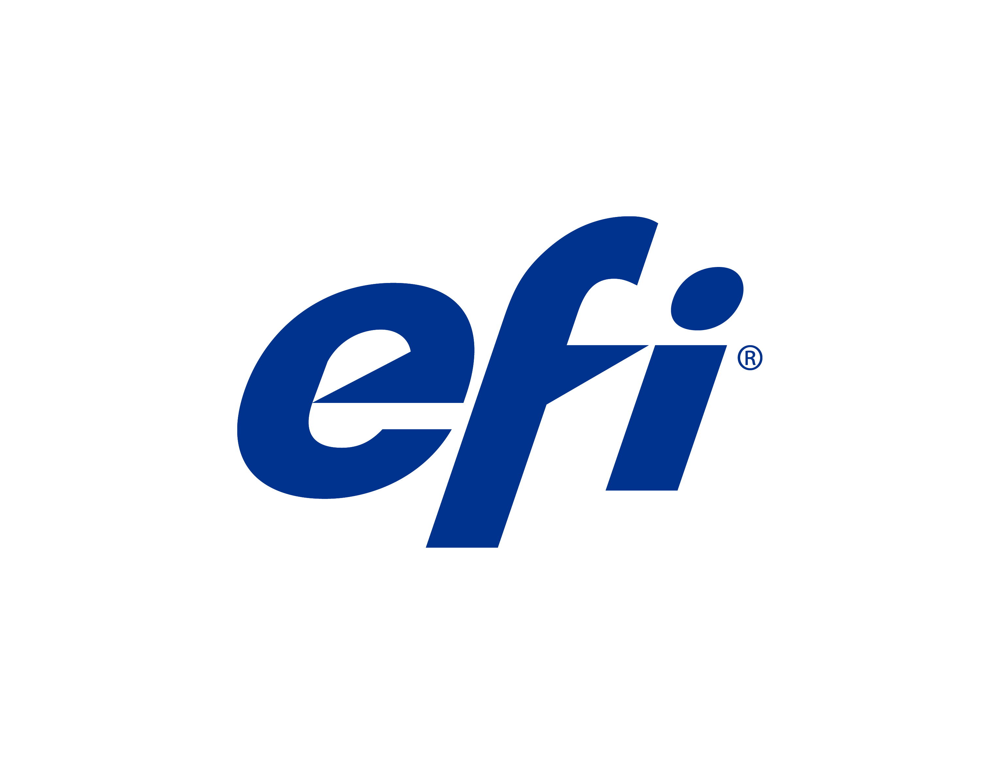

Advanced Micro Devices Radeon Technology Group - Technical Marketing Performance Lab Co-op
May - August 2021
During my tenure at AMD, my position was focused on technical analysis at the Radeon Technologies Group performance lab, where I would collect data on products the company and their competitors released to give to the various divisions in the company. This data was used to find anomalies in new driver revisions and gather presentable data for new product releases. Most of my work was in the form of a PLS (product line summary) report where I would benchmark every graphics card on the market and compare their performance in each title with a product over product and driver over driver comparison. Since the team uses automation for their benchmarking, I would frequently maintain the scripts used for each game as game updates and new changes are needed to make sure the script runs properly and reliably. Another project I was assigned to during my tenure was to help out with the release of the Radeon RX 6600 XT graphics card. The main task I was assigned to do was to test and ensure that the graphics cards sent to reviewers would perform as expected without any defect. I manually tested each card with programs such as 3DMark Time Spy and Furmark to ensure that the temperatures, noise and performance were up to specification.

Electronics for Imaging - Co-op QA Tester
November - December 2020
During my tenure at EFI, my position was a Quality Assurance Tester, where I was assigned to
test the new functionality and bug fixes that the developers put out. Though the work term was
shorter than usual, I contributed a lot during that time as I was able to test over 100 test
cases for a few different projects. One notable project was testing the changes for Fedex's
photo stations when EFI converted their network from on-site (EPPhoto2) to AWS (SSAC). I also
gained some hands-on experience with EFI’s hardware, specifically the M500 and M600 series
kiosks. I was shown how the device was configured and how to service and retrofit different
components on the device.

Sunlife Financial - On-site Support Technician Co-op
January - May 2020
During my tenure at SunLife, my position was an on-site support (OSS) technician, where I would
work with the SunLife Atria OSS team to deal with ticket requests for SunLife employees. Some of
my work includes setting up devices for new employees, troubleshooting problems on employee
devices, test new application updates/revisions and document the behavior, and deploy
peripherals in the office or to the employee’s home. Halfway through the work term, the Atria
office had closed for all non-essential workers due to COVID-19, and I chose to continue my work
term to help out with the rest of the OSS team in the GTA by myself at the Atria office.

City of Toronto - Camp Counsellor
July 2018 - August 2019
During my two years as a camp counsellor with the city of Toronto, I was a staff at the
Ellesmere CC sports camp and Jack Goodlad counsellor in training camp. In my first year, I was
assigned to Ellesmere sports camp where a group of 6 other staff and myself worked together to
run a camp of 60 kids aged 6 to 12 by organizing games and events throughout the entire summer.
The second summer, I was relocated to the counsellor-in-training camp, where I would teach a
group of teenagers, aged 13 to 16, the rules and protocols followed by staff and grade their
performance during their placement at a camp.